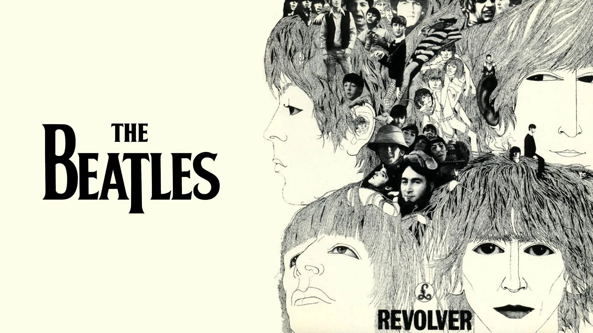
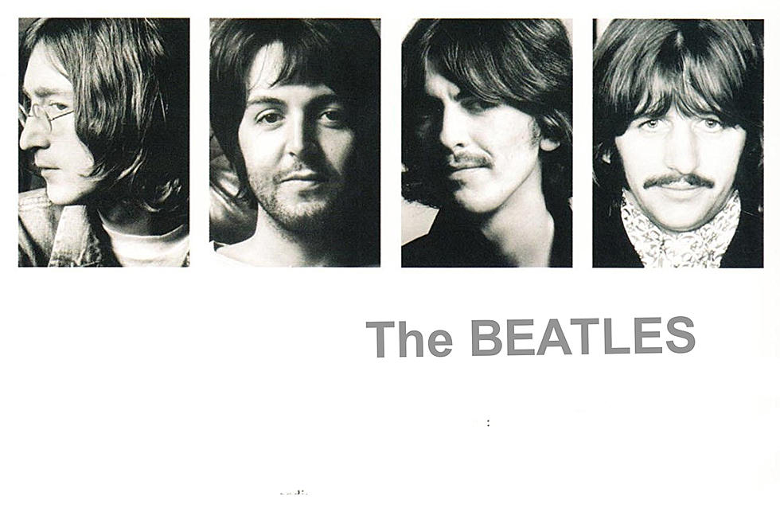

Revolver (1966)

Com muitas experimentações musicais, este álbum marca o início da fase mais psicodélica da banda. Entre viagens de ácido e críticas aos impostos, "Revolver" é até hoje um dos álbuns mais influentes do movimento de contracultura, principalmente com as faixas "Taxman" (Harrison) e "Tomorrow Never Knows" (Lennon/McCartney). A partir deste álbum, o quarteto decidiu que não mais fariam shows e exibições, passando a dedicar todo o seu tempo em estúdios.
Sgt. Peppers Lonely Hearts Club Band (1967)
Considerado até o hoje como o maior álbum de rock de todos os tempos, este disco revolucionou a música como um todo. Trazendo novas técnicas de gravação, mixagem, edição, montagem e muito mais, é sem dúvida o auge do poder criativo da banda.Dentro do conceito do álbum, surgem músicas revolucionárias como "Lucy In The Sky With Diamonts" (Lennon/McCartney) e "A Day In The Life" (Lennon/McCartney).
The Beatles (1968)

Com músicas que vão desde o country até o heavy metal, foi lançado durante a fase mais conturbada da banda, em meio à brigas e discordâncias entre os membros. Este álbum evidencia a genialidade individual de cada um dos membros da banda, justamente pelo fato de cada uma das músicas serem criações individuais, com os outros membros "servindo apenas" como banda de apoio. George Harrison mostrou o salto gigantesco que teve como compositor, trazendo a canção mais aclamada do disco: While My Guitar Gently Weeps. Além disso, esta é a primeira ocasião em que Ringo Starr compõe e canta a própria música (algo que só se repetiria mais uma vez, no álbum "Abbey Road").
Let It Be (1970)
Antes mesmo de "Abbey Road" (1969), o grupo havia realizado a tentativa de gravar um disco voltado para criações mais simples e descontraídas como as do início de sua carreira, este projeto que viria a ser acompanhado de um documentário que mostrava o processo criativo da banda, acabou se tornando extremamente complexo e burocrático. Com a mistura de algumas músicas tocadas em estúdio e outras tocadas ao vivo (no telhado do prédio onde foram gravadas), o disco foi lançado após a separação da banda e conta com algumas músicas muito queridas pelos fãs, como "Let it Be" (Lennon/McCartney) e "Get Back" (Lennon/McCartney).